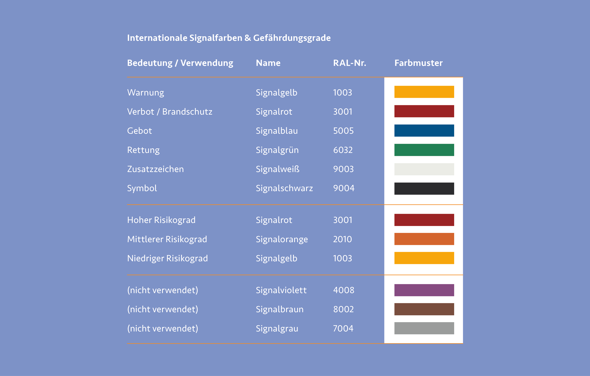

Fluchtsysteme
Rettungs- und Fluchtwege sind anthropozentrisch und stellen somit den Menschen klar in den Mittelpunkt. In unserem Alltag sind sie überall zu finden und sogar gesetzlich vorgeschrieben. Ob in Schulen, Supermärkten, Wohnhäusern, Industrieanlagen oder unübersichtlichen Werkstätten. eine Ausweisung der nächstgelegen Fluchtmöglichkeit im Brand- oder Katastrophenfall ist zwingend notwendig und kann Menschenleben retten. Um eine einheitliche Beschilderung und eine direkte Wiedererkennung zu gewährleisten, sind Vorschriften und Regelungen für den Umgang der Fluchtsysteme festgeschrieben. Diese unterscheiden sich von Land zu Land. Um allerdings auch im Ausland eine einwandfreie Deutung zu gewährleisten, wurde eine Vereinheitlichung von Fluchtzeichen und Symbolen in der Europäischen Union veranlasst.
2012 legte das europäische Komitee für Normung Comité Européen de Normalisation (CEN), mit Sitz in Brüssel, die internationale ISO 7010 als europäische Norm für Grafische Symbole der Sicherheitszeichen fest. Sie ersetzte in Deutschland die bis dahin bestehende DIN-Norm 4844-2. Mit der ISO 7010 wurde der Bedarf von einem einheitlich definierten Regelsatz von Sicherheitsinformationen im internationalen Kontext geklärt. Davor gab es keine übergreifenden Regeln zur einheitlichen Behandlung und Darstellung von Rettungs-, Verbots-, Gebots-, und Brandschutzzeichen, was bei internationalen Nutzenden zu stetiger Missinterpretation führte. Sicherheitsinformationen werden so ohne möglichst viele Worte oder Zusatzinformationen meist komplett auf Symbolebene transportiert, was die internationale Nutzung deutlich vereinfacht und vereinheitlicht. Die ISO 7010 gilt allerdings nicht für den Straßen-, Eisenbahn-, Luft- oder Wasserverkehr, diese Bereiche werden durch eigene Sicherheitszeichen geregelt. 1
Genau wie Zeichen haben auch Farben und Formen Sicherheitsaufgaben. Mit der Normreihe ISO 3864 werden diese international geregelt. In der ISO 3864-4 sind Signalfarben festgelegt, welche unterschiedliche Aufgaben erfüllen. Die wohl gängigste und verbreitetste der Signalfarben ist das Signalrot welches für Brandschutz und Verbote eingesetzt wird. Außerdem werden mit den Farben Signalrot, Signalorange und Signalgelb besondere Risikograde hervorgehoben, die Gefahren, Warnungen oder Vorsicht signalisieren. Außerdem gibt es noch weitere Signalfarben der RAL Classic, die für keine offiziellen Aufgaben oder Bereiche zuständig sind. Diese sind Signalviolett, Signalgrau und Signalbraun. RAL-Farben sind genormte, weltweit anerkannte Farben vom Deutschen Institut für Gütersicherung und Kennzeichnung. 2
 3
Bei der ISO 7010 wird unter folgenden Sicherheitszeichen unterschieden: Rettungszeichen (E), Branschutzzeichen (F), Gebotszeichen (M), Verbotszeichen (P) und Warnzeichen (W).
Rettungszeichen sind rechteckig, meist mit einem Richtungspfeil versehen, ihnen ist die Signalfarbe grün zugeordnet und sie tragen ein weißes Piktogramm. Durch sie werden Einrichtungen zur Rettung oder Fluchtwege kommuniziert.
Brandschutzzeichen sind quadratisch und stehen mit weißen Piktogrammen auf rotem Grund. Sie geben Aufschluss über Einrichtungen und Geräte, die beim Brandschutz von Bedeutung sind.
Gebotszeichen sind rund und verfügen über ein weißes Piktogramm auf blauem Grund. Bei ihnen handelt es sich um Aufforderungen, die der Sicherheit der Nutzenden dienen.
Verbotszeichen sind ebenfalls rund und haben ein schwarzes Piktogramm auf weißem Grund. Der rote Balken, der das Zeichen durchquert, zeigt das Verbot einer jeweiligen Handlung.
Warnzeichen werden durch ein Dreieck abgebildet. Die Signalfarbe gelb bildet dabei den Hintergrund und das Zeichen wird durch ein schwarzes Piktogramm komplettiert. Es weist auf eine potenzielle Gefahrenstelle hin. 1
Brandschutzzeichen und Rettungszeichen müssen laut der Technischen Regeln für Arbeitsstätten A1.3 langnachleuchtend sein. Auch ohne Zufuhr von Energie müssen sie nach Anregung durch Lichtquellen in der Dunkelheit selbständig Leuten, um die Bedeutung des Schildkörpers zu übermitteln. Dabei verliert das Zeichen seine Farbigkeit, behält allerdings das eindeutige visuelle Symbol als Identifizierung.

Hier zeigt sich der universelle Einsatz von Farben, Piktogrammen und Zeichen als gelungene Schnittstelle, für die internationale Verständigung in Notsituationen. Durch die einheitlichen Vorgaben und Gestaltungsregeln können sich auch Betroffene aus anderen Ländern in Notfallsituationen in einer für sie ungewohnten Umgebung zurechtfinden, ohne in kürzester Zeit ein neues System erlernen zu müssen. Der Einsatz von Formsprache und Farbwahl orientiert sich an erlernten Mustern wie etwa des Straßenverkehrs – Warnzeichen sind dreieckig, Verbotzzeichen sind rund und mit einem roten Balken durchgestrichen. Diese Taktik hilf zusätzlich die jeweiligen Zeichen deuten und klar verstehen zu können. Gerade in stressigen und unübersichtlichen Situationen benötigen wir Halt und Struktur um uns in unvertrauten Umgebungen zurechtzufinden.
First Aid Kit
Ein Positivbeispiel für ein gelungenes Leit- und Informationssystem stellt das „First Aid Kit“ der österreichischen Gestaltungsagentur buero bauer dar. Im Zuge der Flüchtlingsströme 2015 entwickelte die Agentur ein iconbasiertes Kommunikationssystem, das Geflüchteten die Ankunft und Orientierung in den für sie unvertrauten Geflüchtetenunterkünften erleichtern sollte. Sind Geflüchtete endlich in einem sicheren Land angekommen, sind sie fremde, beherrschen die Sprache nicht, befinden sich in einer fremden Kultur und es fehlt an verständlichen Informationen und Orientierung für die Betroffenen.
Mit der Frage, wie Gestalter:innen konkret zur Verbesserung der Lage in Geflüchtetenunterkünften beitragen können, wandte sich buero bauer an eine Anlaufstelle für Geflüchtete in Wien Mitte. Dort wurde schnell klar, dass ein großer Bedarf an strukturierter Erstinformation benötigt wurde. Durch die vorhandene Flut an Zetteln und Regeln an Türen und Wänden des Gebäudes in verschiedenen Sprachen und die Tatsache der teilweise widersprüchlichen Informationen, herrschte Verwirrung und Angst unter den Geflüchteten. Die wenigen Helferinnen und Helfer vor Ort waren oft damit beschäftigt, die Informationen zu übersetzen und Strukturen der Unterkunft zu erklären, anstatt die benötigte Hilfe zu leisten.
Die Idee war klar – ein iconbasiertes Informationssystem, welches die Orientierung der Geflüchteten erleichtert und essentielle Informationen über Versorgung, medizinische Hilfe und Verwaltungsfragen bereitstellen soll. Außerdem soll das System so kostengünstig und Anpassungsfähig wie möglich sein, um im besten Fall standortunabhängig zu funktionieren.
In unserem westlichen Kulturkreis haben wir bestimmte Symbole und Darstellungen direkt mit Institutionen oder Handlungen verknüpft. So steht bei uns ein rotes Kreuz auf weißem Hintergrund für erste Hilfe, doch in arabischen Ländern steht der rote Halbmond für ärztliche Versorgung. Auch die Darstellung von Personen kann sich durch kulturelle und religiöse Unterschiede differenzieren. So tragen Frauen in arabischen Kulturen häufig ein Kopftuch, in europäischen Ländern wird dies weniger aus religiösen Gründen getan und die Piktogramme sind dementsprechend unterschiedlich. Diese Gegensätze zu kombinieren ist eine durchaus knifflige Angelegenheit, die in diesem Projekt mit sehr viel Liebe und Feingefühl umgesetzt wurde. Demnach verfügen weibliche Abbildungen über eine Kombination aus Kopftuch und Haaren, die je nach Deutung beide Komponenten erfüllen. Auch die Darstellung der Körperform wurde so gewählt, dass die Figur direkt als weiblich gelesen werden kann und gleichzeitig ein Rock oder einen Umhang trägt, um kulturelle Unterschiede besser ansprechen zu können. Durch durchdachte Gestaltungsarbeit konnte so ein Pool an Piktogrammen entwickelt werden, die für die unzähligen Bereiche einer Geflüchtetenunterkunft benötigt werden. Von Erstinformationen wie Adresse, WLAN, Sanitärbereiche und Trinkwasser bis hin zu spezifischeren Anlaufstellen wie der Abfallentsorgung, medizinische Stellen, Spielplätze für Kinder oder Regelungen innerhalb der Unterkunft ist alles dabei. Durch die einheitliche Darstellung und klaren Linien können Geflüchtete die Informationen klarer wahrnehmen und wissen genau, welche Elemente für die Orientierung und welche für Empfehlungen vorgesehen sind. 6
Eine weitere Besonderheit sorgt für eine kostengünstige und schnelle Bespielung von Flächen und Unterkünften. Die Piktogramme und Servicehinweise können einfach auf handelsübliche DIN-A4 Papiere vor Ort gedruckt werden. So passen sie sich der jeweiligen Unterkunft genau an und können je nach Bedarf erweitert oder umgehängt werden. Des weiteren sorgt die Vorgabe, die Piktogramme auf grünem Neonpapier zu drucken für eine klare Unterscheidung zu anderen Informationen und ist somit auch aus weiterer Entfernung zu identifizieren und sorgt für mehr Aufmerksamkeit und Identifikation. Buero bauer stellt zudem das gesamte Informationssystem als Open Source zum download bereit, damit möglichst vielen Unterkünften und Geflüchteten damit geholfen werden kann. 7 Das System wird durch weitere Piktogramme und Hinweisen stetig erweitert.
Das First Aid Kit ist einfach, klar verständlich und universell einsetzbar. Außerdem kann es ohne großen Aufwand und durch niedrige Kosten an unterschiedlichen Standorten implementiert werden und ist durch seine prägnante Farbe direkt zu erkennen. 6 Außerdem gibt es dem Thema der kulturellen Unterschiede einen neuen Denkanstoß und trägt zur besseren Verständigung untereinander bei. Mit diesem Projekt wurde gezeigt welchen Einfluss Design und Gestaltung auf die Wahrnehmung und interkulturelle Verständigung haben können und mit welch einfachen Mitteln eine gelungene Lösung erzielt werden kann.
2016 wurde das Projekt bei den European Design Awards mit dem 2. Platz in der Kategorie „Self-Initiated Projekts“ ausgezeichnet. 8


LAGeSo – ICC Berlin
Das vorangegangene Projekt der österreichischen Agentur buero bauer hatte zugleich großen Einfluss auf das Wegeleitsystem vor dem Landesamt für Gesundheit und Soziales (LAGeSo) in Berlin. In der dortigen Geflüchtetenunterkunft fehlte es an visueller Kommunikation und so schlossen sich Lilli Artmann, Helferin für Geflüchtete, Anna Gaißmaier, Expertin für Wegeleitsysteme und Fritz Grögel, Designer, zusammen und erarbeiteten ein Leit- und Informationssystem. Als Grundlage diente dabei das öffentlich zugängliche System First Aid Kit. Das System wurde durch einige Grundbausteine erweitert und an eine Nutzung für Außenflächen angepasst. Durch die farbliche Trennung der drei Hauptbereiche Medizin, Versorgung und Verwaltung wurde eine Codierung geschaffen, die es den Nutzer:innen ermöglicht, sich sicher über das Gelände bis hin zum jeweiligen Ziel zu navigieren. Das System wurde gut von den Geflüchteten angenommen und so konnte das Designteam ihr erarbeitetes System auf andere Standorte wie etwa der Geflüchtetenunterkunft am ICC Berlin mit täglich bis zu 1400 Neuankömmlingen ausweiten. Bei der Kommunikation von Informationen und Inhalten wurde zum Großteil auf visuelle Anreize und Piktogramme gesetzt, was die universelle Verständigkeit erhöhte. Somit konnten viele Helfer:innen vor Ort entlastet und einige Angelegenheiten, die keine direkte Betreuung erforderten von den Geflüchteten selbst durchgeführt werden.
Für Informationen, die eine sprachliche Komponente enthielten, wurden sechs Leitsprachen festgelegt, darunter deutsch, englisch, arabisch und russisch. Noto Sans wurde als Schrift gewählt, da sie über Google kostenlos zur Verfügung steht und alle nötigen Schriftsysteme der verwendeten Sprachen abdeckt. Als visuelle Landmarks dienten großflächige Kennzeichnungen auf Rigipsplatten, die sich als Begrenzung ohnehin im Gebäude befanden. Weitere Elemente waren Banner, Aufstellen und Kleinschilder, die durch Farbcodierung und die jeweiligen Piktogramme die Orientierung und Wegbereitung in den teilweise unübersichtlichen Gebäuden und Messehallen erleichterten. Durch die schnelle Beauftragung und Umsetzung des Projektes, konnte zeitnah ein funktionales und klares Orientierungskonzept erarbeitet werden, das viele Geflüchteten sicher und präzise an ihre jeweiligen Anlaufstellen geführt hat. 10
Auch hier zeigt sich ein erneutes Positivbeispiel durch den Einsatz von Gestaltung bei der schnellen Umsetzung von Orientierungsmaßnahmen. Die schnelle Anpassungsfähigkeit der Elemente und der durchdachte Einsatz von Farben und Piktogrammen, erwiesen sich auch hier als mächtiges Mittel zur Problemlösung durch Gestaltung.
-
Vgl. ISO7010.de: DIN EN ISO 7010, 2024, http://www.iso7010.de/iso-7010/ ↩︎ ↩︎
-
Vgl. Wikipedia: ISO 7010, 2024, https://de.wikipedia.org/wiki/ISO_7010 ↩︎
-
Abb.: Signal- und Warnfarben https://de.wikipedia.org/wiki/ISO_7010 ↩︎
-
Abb.: Unterschiedliche Zeichen https://de.wikipedia.org/wiki/ISO_7010 ↩︎
-
Zitat: buero bauer: First Aid Kit, Opensource Infotool, Wien, 2015, https://buerobauer.com/projekte/first-aid-kit/ ↩︎
-
Vgl. changeX: Erste Orientierung im fremden Land, 2015, https://www.changex.de/Article/ideen_fuer_gefluechtete_first_aid_kit ↩︎ ↩︎
-
Vgl. buero bauer: First Aid Kit – Opensource Infotool, 2015, https://buerobauer.com/projekte/first-aid-kit/ ↩︎
-
Vgl. EDAWARDS European Design: First Aid Kit for Refugees & NGOs, 2016, https://awards.europeandesign.org/winner/176669 ↩︎
-
Abb.: First Aid Kit https://buerobauer.com/projekte/first-aid-kit/ ↩︎ ↩︎ ↩︎
-
Vgl. Grögel, Fritz: Wegeleitsystem LAGeSo, 2016, https://www.fritzgroegel.net/wp/wegeleitsystem-lageso/ ↩︎
-
Abb.: LAGeSo Leitsystem https://www.fritzgroegel.net/wp/wegeleitsystemlageso/ ↩︎ ↩︎